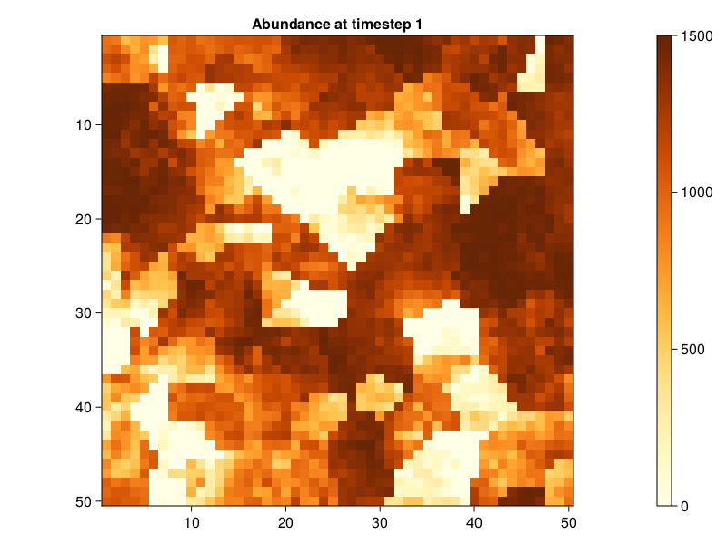

Usage
Installation
Install the package by using the julia REPL and entering ] to enter the package manager. Then execute:
pkg> add https://github.com/janablechschmidt/MetaRange.jl.gitAlternatively use Pkg directly and enter:
using Pkg
Pkg.add(url = "https://github.com/janablechschmidt/MetaRange.jl.git")Configuration
Configuration files for MetaRange are most conveniently supplied together in a folder. The folder should contain a configuration file and two sub-folders "environment/" and "species/". The configuration file can also define a path to environment or species files elsewhere.
configuration/
├── configuration.csv
├── environment/
│ ├── temperature.csv
│ ├── precipitation.csv
│ ├── parameter_1.csv
│ └── ...
└── species/
├── species_1.csv
├── species_2.csv
└── ...Configuration File
The configuration files are all formatted as space separated .csv files. This is the same minimal example as in examples/static/. More information on the configuration files can be found in the Parameters section.
Argument Value
experiment_name static
timesteps 50
temperature temperature.csv
precipitation precipitation.csv# how are conflicts resolved if the same parameter is supplied in the configuration file and in the species file?
Environment Files
Environment files are formatted as space separated .csv files. The model needs a temperature file to calculate metabolic rates. MetaRange works with either a single .csv that is used for the whole simulation or a folder with several .csv files to simulate a change in the environment. In this case the folder should contain one file for each timestep.
Species Files
Several species files can be supplied to the model at the same time. Here is the example species file from examples/static/. More information on the species configuration files can be found in the Parameters section.
Argument Value
species_name example
mass 1.0
sd_mass 0.1
growrate 1.5
sd_growrate 0.1
max_dispersal_dist 3
max_dispersal_buffer 2
mean_dispersal_dist 1
allee -100.0
sd_allee 0.1
bevmort 0.2
sd_bevmort 0.35
carry 1500.0
sd_carry 50.0
upper_limit_temperature 300.0
lower_limit_temperature 285.0
optimum_temperature 292.5
response_temperature sqrt
upper_limit_precipitation 1900
lower_limit_precipitation 1100
optimum_precipitation 1500
response_precipitation sqrt
habitat_cutoff_suitability 0.01Running the simulation
To run the simulation first load in your files as a Simulation_Data struct by using the read_input function. Then run the simulation by using the run_simulation!() function on the Simulation_Data object.
SD = read_input("./examples/static/configuration.csv")
run_simulation!(SD)Output
Visualization
For a quick visualization there are a few functions implemented. These can be found in the Visualization Functions section. plot_abundances creates a line plot of the first species in the simulation over time. image_abundances creates a heatmap of the abundances at the specified time-step.
The function abundance_gif creates a gif of the abundance heatmap over time:

Other visualization functions are image_suitability, suitability_gif, image_temperature, image_precipitation and image_restrictions.
Simulation Data Object
To directly check the results and to do more detailed analyses directly inspect the Simulation_Data object. In julia this is done by looking at the fields with the period character .. So to see the final population size of the first species you would use:
SD.species[1].abundances[:,:,end]